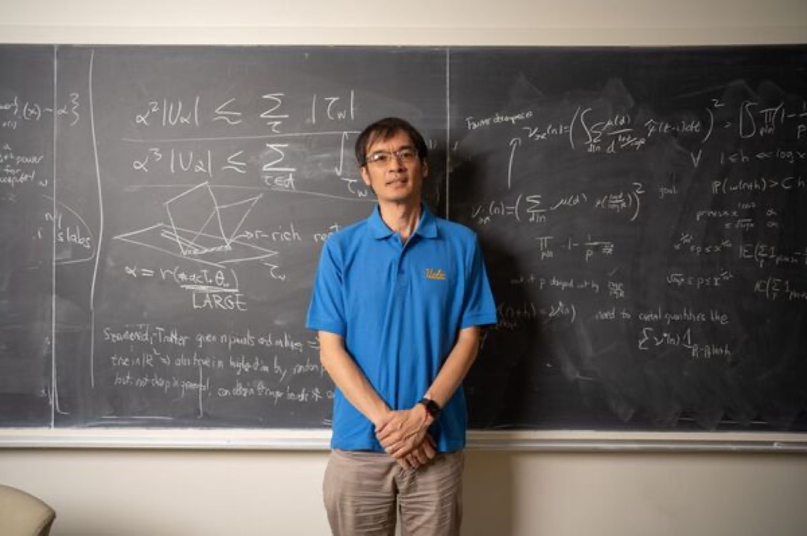
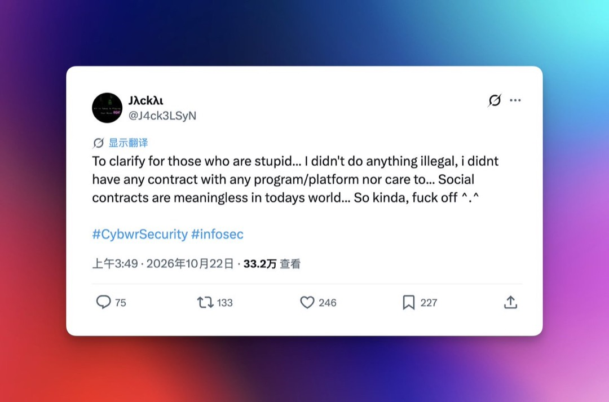
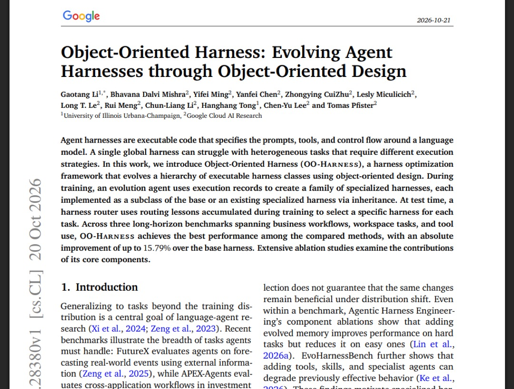
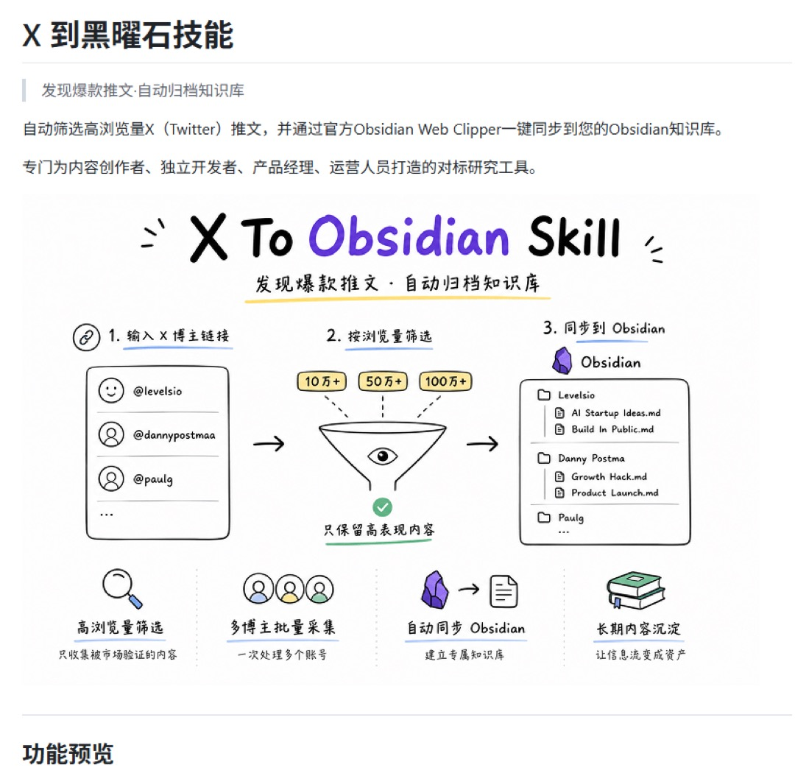

本期速览
01 陶哲轩批OpenAI证明为有毒废料
02 PHP漏洞研究员打破静默期引争议
03 Agent Harness面向对象自演化
01｜陶哲轩批OpenAI证明为有毒废料
来源（X） · @foxshuo · 2026-10-22 14:08
陶哲轩曾是数学家群体里对AI最为友好的一位，如果你们还记得，每次OpenAI发布新模型，他都会率先出来站台，分享他和新一代ChatGPT又一起合作取得了怎样的进展，那时他是真的热爱AI，相信这项技术能够为数学带来无限可能。
而OpenAI也很懂事，数学是一门相对纯粹的科学，和它绑定能为AI带来相当份量的声誉加成，所以也一直对陶哲轩等少数「VIP客户」敞开模型供应，甚至当陶哲轩所在的数学研究所被削减经费的期间，OpenAI还掏了几万美金赞助，帮忙渡过难关。
事情是从什么时候开始变质的呢？
10月6号，OpenAI一次性公布了350多项「科研」成果，几乎遍及数学的所有分支，包括代数、数论、理论计算机科学、数理逻辑、拓扑学等等，陶哲轩说，他看到了一枚炸弹的投下，这是开战的信号，以及OpenAI对他乃至整个数学界的背叛。
作为和OpenAI有着密切关系的数学家以及合作者，陶哲轩提前一个月就知道了这批成果的发布计划，他反对了，然而反对无效，于是在OpenAI推进工作的同时，他也写好了一份声明决定同期公开，也就是后来发在自己博客上的那篇檄文，和24个菲尔兹奖得主共同署名，批评OpenAI是在伤害数学这个学科。
那天有10万人点进了他的博客，可能比过去几年的流量都要高。
虽然陶哲轩开始改口把AI产出的那些证明称作「Toxic Waste」（有毒的废料），不过与其说他是在反对AI，不如说他认为OpenAI这样的AI公司过于急功近利了，为了表现出模型的强大，不惜摧毁数学这个行业的基石。
作为理论数学的代表人物，陶哲轩年少成名，8岁时SAT数学考了760分，24岁就当上了加州大学洛杉矶分校的终身教授，基于「过来人」的经验，深知年轻数学家需要的是什么，AI提供工具，那没毛病，然而直接代为上台发表成果，就是在牺牲这一代数学家的未来了，「像是被剧透后，你就再也无法体验从头推理剧情的乐趣了」。
陶哲轩带的学生也已经懵逼了，有人花了多年时间试图解决的问题，正好在OpenAI这次批量化成果的射程以内，在看完AI写的充满难懂术语的论文之后，他有很多疑问，却找不到可以和「作者」交谈论证的机会。
这不是数学界习惯的程序，按照以前的做法，有人发表了突破性的论文，然后就会有学术会议被组织起来，作者会出席分享更多的思考，然后与会者一起碰撞交流，以一种社会化的方式，缓慢但有意的推动数学前进。
但OpenAI不是这么做的，它像是倒垃圾一样，把几百篇手稿灌进了GitHub，要知道，这不是通俗小说，是看每一句话都要付出巨大脑力消耗的前沿论文，光是评审这批「成果」，搞不好都要花掉整个数学界好几年的时间。
归根结底，软件和数学，是不同的。
软件属于应用科学，规模化的游戏规则再正常不过了，在OpenAI看来，自己明明是在做贡献，自费烧了天量的算力，给数学界献上前所未有的馈赠，怎么就得不到想要的感恩呢？
但数学本质上是实验科学，「你坐在桌子前，拿起纸笔，就可以试着证明一些东西」，而OpenAI解决纳维—斯托克斯问题的方法，是1万个无限Token的智能体花了3天时间写完165页的证明，成本可能价值几百万美金，这是数学家们根本负担不起的能力。
这跟当年AlphaGo打遍天下围棋大师也不太一样，很多人会说，AI在下围棋这件事情上碾压人类，也没有消灭围棋这项竞技啊，反而有更多的棋手加入进来，职业棋手的梯队也还在稳步扩增，怎么数学家就这么矫情呢？
在陶哲轩看来，数学要复杂得多，如果人类无法理解AI所做的那些证明，那么光有技惊四座的结果，是无用的，他自己，以及他能找到的专家，都没办法完全读懂OpenAI破解纳维—斯托克斯问题的论文，这种暴力穷举的做法，让双方再也没有合作的希望了。
陶哲轩承认，随着模型能力的一日千里，数学界一定是要转型的，但自我反思，和被枪口抵着反思，是两码事，他现在去见学生的时候，专业交流的占比都很少了，大多数时候，他感觉更像是在做心理疏导，要让年轻的数学家重振信心，相信AI不会让自己的人生毫无意义。
source:Why One of the World’s Greatest Mathematicians Is on a ‘War Footing’

02｜PHP漏洞研究员打破静默期引争议
来源（X） · @realfxw · 2026-10-22 13:14
PHP 官方团队本来早就把补丁搞定了，发布时间都精确到了几点几分。
结果倒好，这位哥根本不等补丁正式落地，在静默期倒计时还没走完的时候，直接把漏洞细节甩公网了！ 攻击者拿到就能直接顺着网线打服务器，而运维甚至连补丁都还没拿到。
🤬 面对全网声讨，他的回复堪称年度最狂
当全球技术圈都在质问他为什么这么不负责任时，他直接发推硬刚，原话极其刺耳冷血：
“给那些蠢货解释一下：我没做任何违法的事，我也没和任何项目或平台签过合同，更不在乎……在当今这个世界，所谓的‘社会契约’毫无意义。所以，都给我滚蛋吧 ^.^”
最后甚至还附带了一个嘲讽拉满的笑脸颜文字 ^.^。
从纯法律角度看，他确实钻了空子：没有哪条法律强制独立研究员必须签保密协议。 这种“静默期”纯粹是技术社区三十年来靠职业伦理和道德维持的君子协定。
可当他说出“社会契约一文不值”的时候，整个开源世界的体面彻底被踩得稀烂。
👨💻 惨的只有谁？只有打工人！
有条热评看哭了无数人：
“现代互联网，本质上都在靠那些挖到漏洞却不滥用、默默通知开发者的好人维持着。”
大厂有重兵把守的防火墙，但遭殃的是谁？ 是医院挂号系统、学校教务网、中小公司的小程序，还有半夜三更被电话叫醒、顶着黑眼圈在无补丁状态下手动改源码防黑客的普通打工人。
拿“自由”和“叛逆”当借口，让全网毫无防备的普通技术人替他的任性买单，这真的称不上什么黑客精神，纯粹是利己主义的狂欢。
大家怎么看这种“虽然合规但毫无道德底线”的行为？评论区聊聊👇
#程序员日常 #后端开发 #PHP #网络安全 #科技热点 #今日吃瓜 #代码人的日常 #黑客 #hacker #Infosec #CyberSecurity

03｜Agent Harness面向对象自演化
来源（X） · @snwiki238337 · 2026-10-22 10:05
一统全局脚手架，试图用一套Prompt 和控制逻辑。但随着业务场景增加，针对财务表格优化的指令往往会干扰代码生成任务，导致严重的规则冲突与上下文过度膨胀。
另一种是针对每个特定领域单独复制一份专用代码。然而不同版本之间无法代码复用，维护起来很难。而且一旦遇到未曾见过的分布外（OOD）新任务，专用脚本往往会崩溃，且无法回退。
其实人类软件工程早在 40 年前，就用面向对象编程完美解决了复用、特化与隔离的问题。
那么，为什么不把这套直接用在 Agent Harness 的自动演化上？
Google Cloud AI Research 联手 UIUC 团队，刚刚在 arXiv 上发表了一篇论文：Object-Oriented Harness: Evolving Agent Harnesses through Object-Oriented Design
他们提出了 OO-Harness，首次将面向对象设计（OOP）的继承、封装与多态引入智能体脚手架的自我演化中。
OO-Harness 的设计哲学非常纯粹，就是将 Agent Harness 直接建模为一组可执行的 Python 类层级体系。
首先定义一个标准的基础类，封装最通用的核心执行逻辑、基础工具接口与容错底座，确保系统在任何时候都有稳固的下限。
演化 Agent 采用 Claude Opus 4.8 深度剖析历史失败日志，自动捕捉特定业务集群的痛点，并自主编写新的 Python 子类。
子类直接继承 Base 的通用控制力，仅针对性地重写特定方法。
测试阶段是由路由 Agent 结合初始执行证据比如第一轮报错日志或环境状态，精准定夺。
如果匹配到已知痛点，立即指派给特化子类 Harness 执行。如果发现是陌生的分布外任务，系统安全降级调用 Base Harness，彻底杜绝了盲目特化导致的误伤。
这项研究中他们把底层的执行大模型gemini-3.5-flash完全冻结，不调一个参数，仅仅依靠演化这套 OOP 代码 harness，在三大长程复杂基准上刷出性能跨越
覆盖金融、HR、营销、销售等长链条业务，主指标综合得分从 61.62% 至 77.41%。严苛任务通过率从 25.44% 至 37.22%，同时由于逻辑更加精简直接，平均执行步数反而减少了 3.28 步。
此外在极其繁杂的文档、幻灯片与表格跨应用任务中，综合得分从 25.45% 至 39.48%。
多工具复杂交互中得分稳步从 71.87% 推进至 77.18%。
在面对未曾见过的分布外任务时，传统的自演化方法因为把过度拟合的专用规则强行套用在新任务上，通过率直接跌至 44.90%；
而 OO-Harness 凭借面向对象的安全兜底机制，自动识破陌生场景并复用 Base 基类，保持了59.18% 的表现。
OO-Harness 给整个 AI 工程指明了一条无比清晰且优雅的道路。
把 Agent 当一段具备状态的软件工程实体。
把面向对象的继承与封装，当做 AI 自动演化、自我重构的载体，能很好的解决代码复用和泛化退步的问题。
推荐所有在 Agent 生产环境落地、工具链治理与长程复杂工作流架构的读这篇
arxiv：https://arxiv.org/abs/2610.28380

04｜X推文按浏览量筛选归档进Obsidian
来源（X） · @bkdgiffug · 2026-10-23 04:01
你天天在X上刷爆款、AI案例、增长套路，手一抖就收藏，回头再也翻不出来，是不是这样？
X To Obsidian Skill不负责替你收藏，它干的是把高浏览量推文自己筛出来，一键塞进Obsidian，按博主分好目录，views、likes、作者这些也一并记上。
三步走：
1️⃣ 把博主链接丢进去，比如盯着levelsio、paulg
2️⃣ 按浏览量过滤，10万、50万随你卡线
3️⃣ 自动同步归档，信息流当场变成你自己的素材库
前提：官方Web Clipper得先装上，Obsidian开着，X登着。
🔗 https://github.com/hemoouren/X-to-Obsidian-SKill

05｜GPUI组件ELY入选Zed官方列表
来源（X） · @ZacharyZhang · 2026-10-23 04:44
让GPUI伟大！！！！
https://github.com/zed-industries/awesome-gpui